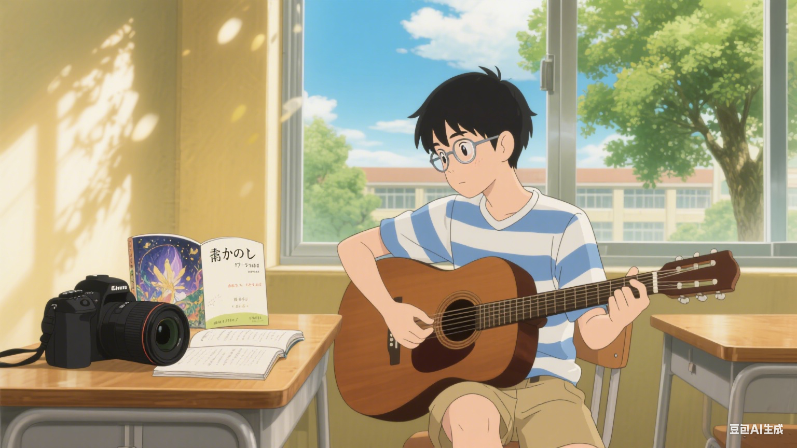

👋 關於我

你好，我是瑞紘，一名對生活充滿好奇與創意的高中生！我熱愛攝影、彈吉他、寫作與日文學習，目前正努力打造屬於自己的個人品牌網站。
這個網站會記錄我生活中的創作與成長，也希望能與更多有相同興趣的人交流。如果你喜歡日系風格、街景拍攝或動漫音樂，我們一定合得來！
你好，我是瑞紘，一名對生活充滿好奇與創意的高中生！我熱愛攝影、彈吉他、寫作與日文學習，目前正努力打造屬於自己的個人品牌網站。
這個網站會記錄我生活中的創作與成長，也希望能與更多有相同興趣的人交流。如果你喜歡日系風格、街景拍攝或動漫音樂，我們一定合得來！